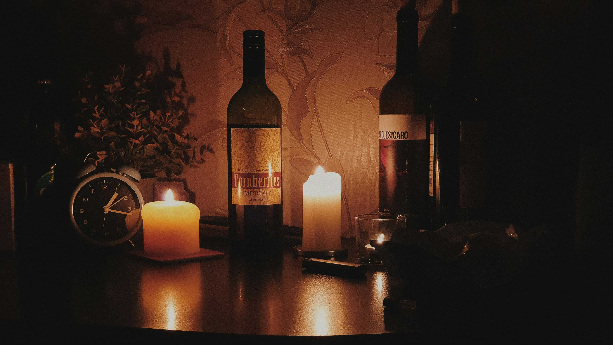

Як правильно дегустувати вино: 3 прості кроки
Автор: Максим Гілітуха | Час читання: 3 хв

Часто люди думають, що дегустація вина — це щось складне і доступне лише професіоналам. Але насправді достатньо знати базові правила, щоб набагато краще відчувати смак. Ось проста інструкція, якою ми користуємося на наших дегустаціях у Луцьку.
Крок 1: Око (Колір)
Налийте трохи вина в келих (приблизно на третину). Нахиліть його над білим фоном (наприклад, аркушем паперу) і подивіться на колір.
- Білі вина: з віком стають темнішими (від блідо-лимонного до бурштинового).
- Червоні вина: навпаки, з віком світлішають (від насиченого фіолетового до цегляного).
Крок 2: Ніс (Аромат)
Спочатку просто понюхайте вино. Потім злегка покрутіть келих. Це наситить напій киснем, і аромат розкриється сильніше.
Що можна відчути?
Виноград має властивість імітувати інші запахи. У білих винах часто чути яблука, цитруси або тропічні фрукти. У червоних — вишню, сливу, перець або навіть шкіру і тютюн (якщо вино витримувалось у бочці).
Крок 3: Рот (Смак)
Зробіть невеликий ковток. Не ковтайте одразу, нехай вино "покатається" по язику. Зверніть увагу на такі речі:
- Кислотність: чи викликає вино сильне слиновиділення?
- Таніни (для червоних): чи є відчуття сухості або терпкості на яснах?
- Післясмак: як довго смак залишається в роті після того, як ви проковтнули напій? Чим довше — тим якісніше вино.